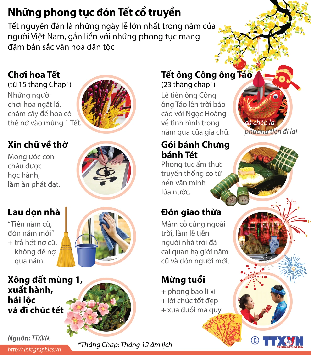

Summarize a Reading
about Tết Nguyên Đán
Tóm tắt bài đọc về Tết Nguyên Đán
You are an exchange student in Vietnam and want to learn more about Tết Nguyên Đán to share with your family and friends. You come across an article about Tết — read it, take notes, and summarize the key information.
Navigate sections using the left sidebar. Type answers directly into the input fields. Activities marked 💬 are for discussion — write your ideas in the text areas. Use Check Answers for exercises with fixed answers.
If the embed does not load, watch the video on YouTube.
Mai! Má Về — Hòa Minzy x NSND Bạch Tuyết x Hứa Kim Tuyền | Official MV Nhạc Tết
Click to reveal suggested answers & transcript
3. Ví dụ: dọn dẹp nhà cửa, mua sắm, trang trí, chuẩn bị đồ ăn.
4. ngày mai / cây mai
Tí Na lại đây phơi đồ phụ má nè. Dạ. Hai đứa ở nhà phải ngoan nha. Khi nào mai nở thì má lại về với tụi con nha. Ủa lỡ mà mai không nở thì sao? Má còn trồng cây, sợ gì mai không nở. Nếu mai không nở thì hai con của má làm cho mai nở để má về. Dạ dạ.
Tết này con chưa biết có về được không. Ba an ủi hai đứa nhỏ giùm con. Má bay nói má bay ở trển kiếm thêm để mua quần áo mới cho hai đứa ăn Tết. Ngoại nói má về được không? Con thấy đồ Tết năm ngoái còn thơm với còn mới mà. Hay tại năm nay mai không nở nên má không về với tụi con.
Ngoại tháng trước chỗ làm má con cho nghỉ việc nhiều, chỗ đây mùa màng thất bát, ai cũng khó khăn. Hai đứa đợi tới bữa coi sao hen. Đừng lo, con thấy còn da thì lá mọc, còn chồi thì nảy.
Ngoại ơi, tụi con muốn chăm cho mai nở để má về, cực cỡ nào tụi con cũng chịu được. Đúng rồi đó, giỏi lắm. Dù làm lắm nhưng Tết cũng đã đến rồi. Mọi lâm lâm sẽ đến bằng êm ấm, mang niềm vui trở về nơi gia đình mong ngóng. Một năm đã qua, con cố gắng là còn thấy vui. Mùa Xuân đang đến đây ngập tràn với những cảm xúc bồi hồi. Tết sắp đến, ai rồi cũng sẽ nhìn về nơi đã bắt đầu. Lại một năm đã qua, mình còn lầm lũi ở giữa cuộc đời, thật may mắn mình còn cố gắng và còn nơi để quay về.
Những người con chờ mong đến Tết để nhìn thấy mẹ cha bên mình sau một năm trời chỉ thấy nhau qua màn hình. Những gian khó rồi cũng sẽ qua, gia đình sum vầy chỉ mỗi năm một lần. Hoa đã nở, anh Tú sao mai nở hết chân rồi mà má chưa về. Thế Na chờ chuyến xe cuối từ Sài Gòn về. Lệ sẽ đến lúc quay về, dù xa mấy cũng sẽ quay về. Có lẽ những nỗ lực của ngày tháng qua là để ta có những thứ ta cần, để bảo vệ những người ta yêu thương. Vì thế nên còn lầm lũi là còn hy vọng.
Tết cũng đã đến rồi, mọi lầm lũi sẽ đến bằng êm ấm, mang niềm vui trở về. Con nói má, đồ còn mới và còn thơm mà. Thôi nè. Một năm đã qua, con cố gắng là con thấy vui. Tết mang niềm vui trở về nơi gia đình mong ngóng, ta trở về, một năm đã qua con lầm lũi vẫn là con thấy vui.
| Hình ảnh / Từ khóa / Thông tin | Trải nghiệm về Tết |
|---|---|
💡 Ideas: Những phong tục đón Tết cổ truyền

| Câu hỏi 1 | |
| Câu hỏi 2 | |
| Câu hỏi 3 | |
| Câu hỏi 4 | |
| Câu hỏi 5 |
You are an exchange student in Vietnam and want to learn more about Tết Nguyên Đán to share with your family and friends. You come across the article below. Read the article and take notes.
Tết Nguyên Đán còn được gọi là Tết ta, Tết truyền thống hoặc đơn giản là Tết — một dịp lễ vào đầu năm theo lịch âm của nhiều nước châu Á. Ngày Tết được hiểu theo âm chữ Hán là “tiết,” khởi đầu buổi sáng. Tết Nguyên Đán thường diễn ra từ ngày 23 tháng Chạp đến hết ngày 7 tháng Giêng.
Nguồn gốc của Tết vẫn là một vấn đề tranh cãi. Tết được cho là xuất phát từ Trung Quốc và được Việt Nam áp dụng từ thời kỳ Bắc thuộc. Tuy nhiên, theo truyền thuyết “Bánh chưng bánh giầy”, người Việt đã tổ chức Tết từ thời vua Hùng, trước cả thời kỳ Bắc thuộc. Tết Nguyên Đán không chỉ là sự chuyển giao giữa năm cũ và năm mới mà còn là sự giao thoa giữa con người, thiên nhiên và thần linh. Trong truyền thống nông nghiệp, Tết là thời gian tôn vinh các vị thần như thần Đất, thần Mưa, thần Mặt Trời...
Bánh chưng, bánh tét là món ăn truyền thống không thể thiếu, thường được làm và chia sẻ giữa các thành viên trong gia đình và bạn bè. Việc gói bánh chưng trước ngày Tết là nét đặc trưng của nền văn hóa Việt. Đây cũng là cơ hội để gia đình thêm gắn kết. Ngày Tết, cả gia đình ngồi lại bên nồi bánh chưng nóng hổi là khoảnh khắc đáng nhớ.
Đối với trẻ em, việc nhận phong bao lì xì đỏ là một phần không thể thiếu của Tết. Chúc Tết và mừng tuổi là những hoạt động truyền thống, tạo ra những kỷ niệm đẹp trong những ngày đầu năm mới.
| Tên gọi — Tên gọi khác của Tết là gì? | |
| Thời gian — Tết diễn ra vào thời gian nào? | |
| Nguồn gốc — Tết bắt nguồn từ sự tích gì? | |
| Phong tục — Người Việt thường có phong tục gì? | |
| Ẩm thực — Người ta thường ăn gì trong dịp này? | |
| Thông tin khác |
If the embed does not load, watch the video on YouTube.
| Sự khác nhau | Miền Bắc | Miền Trung | Miền Nam |
|---|---|---|---|
| Món ăn | |||
| Cây cảnh và hoa | |||
| Hoạt động |
Click to reveal transcript (excerpt)
Cây cảnh và hoa ngày tết
[âm nhạc]
Miền Bắc đã từ lâu chưa đào Tết là một thú vui không thể thiếu trong phong tục ngày tết của người dân miền Bắc. Với khí hậu thời tiết se lạnh thêm chút mưa Xuân vào những ngày cận Tết ở miền Bắc là điều kiện lý tưởng để những cành đào vô sắc đâm chồi nảy lộc. Tết về, đường phố lại ngợp trong sắc hoa đào.
[âm nhạc]
View the full transcript on YouTube: Tết 3 Miền Bắc - Trung - Nam
Mọi người không chỉ chuẩn bị đồ ăn ngon cho bữa cơm Tết, mà còn trang trí nhà cửa rất đẹp mắt.
Đã nhắc đến bóng đá, chắc chắn ai cũng từng nghe tới cầu thủ Pele.
nhộn nhịp · hân hoan · ấm áp · háo hức · rộn ràng · hồi hộp · vui vẻ · đầm ấm · đông đúc · tưng bừng
2. Dù làm việc vất vả cả ngày nhưng anh ấy vẫn giữ vững tinh thần lạc quan.
3. Đã nhắc đến Tết, chắc chắn không thể thiếu tiền mừng tuổi.
Also available as an H5P activity.
| G | Goal | You are going to give a presentation about Vietnamese celebrations. |
| R | Role | You are a member of a culture class/club and have been asked to explore holidays and festivals around the world. |
| A | Audience | Your classmates who are interested in learning more about Vietnamese holidays and celebrations. |
| S | Situation | You have been assigned to give a presentation about Vietnamese celebrations other than Tết Nguyên Đán for your classmates in a culture studies / GenEd class or a Vietnamese Student Association. You need to do some research to prepare for your talk. |
| P | Product | A summary table in English or Vietnamese, plus a list of the readings you used. Publish your work on the Exit Task Padlet if you want to share publicly. |
| S | Standard | 1. Complete the summary table with sufficient and accurate information. 2. Provide a brief summary of each reading and its main ideas. 3. Explain why you found the reading interesting and informative. 4. Use proper grammar, spelling, and punctuation. 5. Use clear and concise language. |
Nhiều người chỉ biết tới Tết Nguyên Đán của người Việt, nhưng trên thực tế, người Việt có nhiều dịp Tết khác nhau. Sử dụng các công cụ tìm kiếm để tìm hiểu về các dịp Tết.
| Tết | Thời gian | Nguồn gốc | Phong tục | Ẩm thực | Nguồn (source) |
|---|---|---|---|---|---|
| Tết Nguyên Tiêu | |||||
| Tết Đoan Ngọ | |||||
| Tết Trung Thu | |||||
Click 🔊 to hear each word. Flashcards: Quizlet SA · Quizlet NA